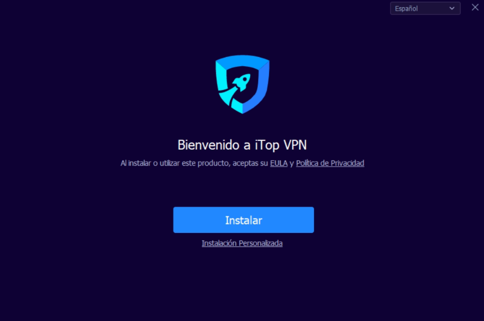
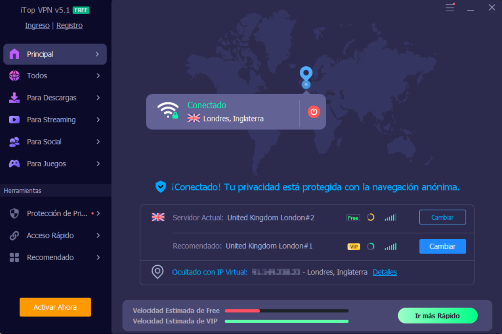
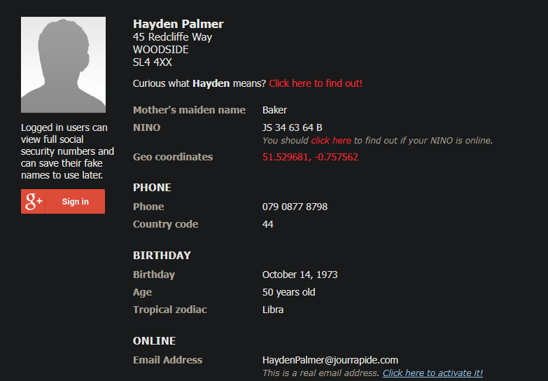
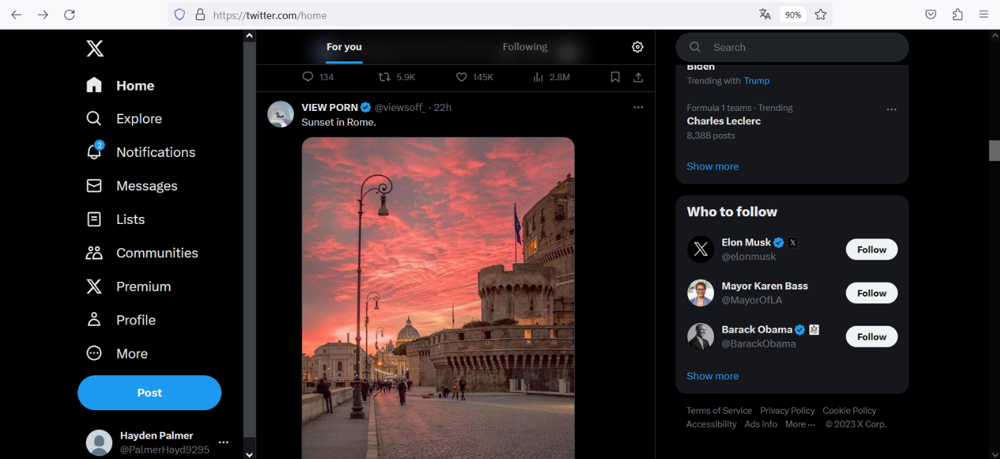

Se ha creado una máquina con Windows 10 Pro instalándola sin interfaz bridged para que tenga conexión directa con la interfaz de mi ordenador personal.

He decidido optar por iTopVPN, porque no requiere de registros para pruebas gratuitas, y lo que queremos conseguir en este proceso es no dejar ni un rastro de mi rastro incluso al registrarme en la página de la VPN y demás del sock puppet que posteriormente voy a crear.
Aquí se aprecia que la VPN está funcionando.
Es en este momento donde las páginas de creación de perfiles falsos toma acción, y por ellos utilizaremos la herramienta Fake Name Generator, el cual nos servirá para no solo crear el nombre, apellidos y dirección del sujeto falso, sino de su correo, usuario, contraseña… Dispone de un sistema el cual aparece en la captura que se llama Fake Mail Generator que tiene como función activar el correo del perfil falso recientemente creado para poder tener bandeja de entrada real.
He visualizado la información esencial, pero más abajo se encuentran varias líneas más de descripción. También utilizaré otra herramienta llamada thispersondoesnotexist.com, la cual generará una imagen irreal de una persona que servirá como foto de perfil para la red social posterior:
Ahora es momento de registrarse en Twitter (X) (en mi caso) para empezar con “el primer contacto al exterior” de nuestro sock puppet. Con ayuda de Fake Mail Generator podremos crear el perfil al completo.
Hemos conseguido acceder con nuestros datos sin problema, ahora vamos a finiquitar el perfil con la imagen y una buena descripción para que no se dude de este. Ha quedado de la siguiente manera:
Para dejar la huella de este perfil en la red y pasar desapercibido, he retwiteado un par de cosas y respondido un tweet, al mismo tiempo que también he twitteado algo a nivel personal, pero de manera ficticia.
A partir de aquí se podrían realizar muchas más acciones.